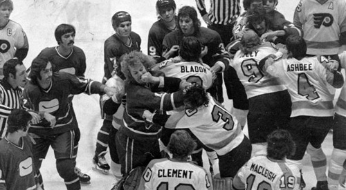

The Philadelphia Flyers entered the NHL as an expansion team in 1967. The Flyers are owned by Ed Snider, who helped bring them to Philadelphia.
The Flyers won back-to-back Stanley Cup titles in 1973-74 and 1974-75 with a group of players feared around the National Hockey League known as The Broad Street Bullies.
Broad Street Bullies
Image source.